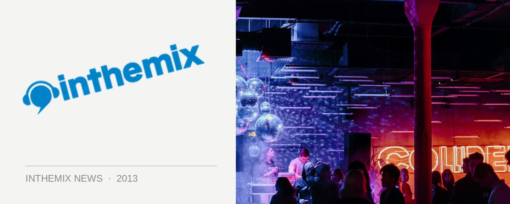

Drum & bass, hardstyle, trance: Ultra Europe's all-in Night Two
Ultra Europe returned to Poljud Stadium in the Croatian city of Split on Saturday for its second day of mayhem, with a mainstage line-up that spanned further than the EDM drawcards who had dominated the first night. Trance, hardstyle, drum n’ bass and dubstep were all welcomed by a rapturous crowd response.
The first of the eclectic big-leaguers to hit the Ultra Europe mainstage in the late afternoon were rising Dutch stars W&W. The duo has scaled the trance ranks, while also reaching well beyond their scene with a crossover sound that worked perfectly for them on Saturday: massive melodies, mixed with huge drops and driving basslines.
UK bass roughnecks Chase & Status were up next to push the formula out even further, with a set that didn’t skirt the heavy drum n’ bass, which proved to be a smash with the crowd. Dubstep anthems like Flux Pavillion’s Can’t Stop also rumbled out the speaker stacks towards the end of the set, while the outfit also made room for their own anthems like Blind Faith as well as a surprise appearance of The Prodigy classic No Good.
After a strong showing in Miami this year, Krewella were up next to represent Ultra’s home turf, slamming out their brand of pop-friendly, relentless dubstep and electro that has won them a fleet of fans back home – though they also dabbled in thundering hardstyle during their set; an increasingly popular sound amongst the ranks of EDM success stories.
The Carl Cox & Friends arena again kept things heads-down with an elite cast of DJ talent on hand, including Jamie Jones, Marco Carola and a particularly driving, percussive set from Reboot. As the packed mainstage moved towards its conclusion, Afrojack dependably delivered a set of high-powered anthems. Not unlike Friday night, while it was 25-year-old Dutch high-roller Hardwell who was tasked with the closing slot, it was the DJ who preceded him that brought the evening to its zenith: Armin van Buuren.
“Hello Ultra Europe,” text scrawled on the LCD screens as he stepped onto the stage. “Let’s make tonight…Intense.” After the dramatic opener from his new album of the same name, what followed was a slick, high-energy set that showed just how effortlessly Armin takes to playing these stages. With a cavalcade of synced visuals, flamethrowers, fireworks and other assorted pyrotechnics on-hand, Armin played a watertight set of driving, melodic trance, showcasing his sound while still keeping the EDM fans happy – the defining theme for the second day of Ultra Europe.